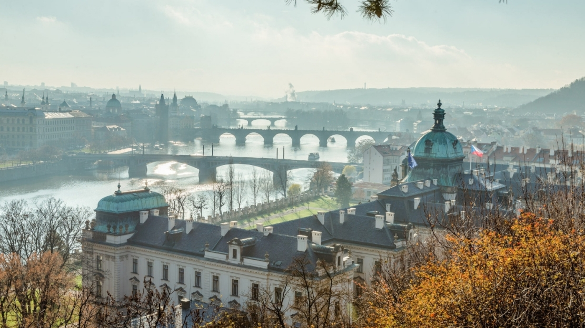
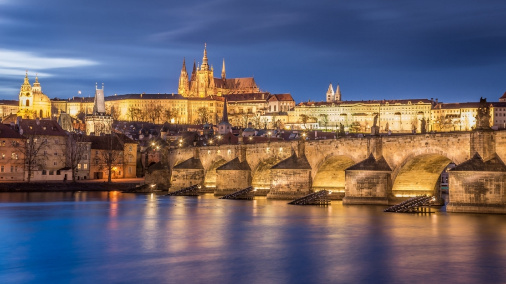
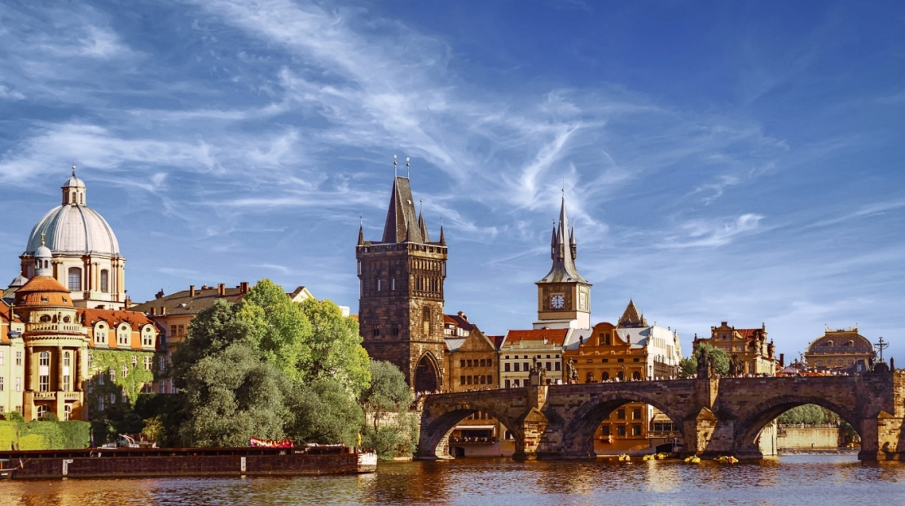

Огляд
Місто неймовірно популярне у туристів, які їдуть помилуватися його унікальною архітектурою, познайомитися з чеською культурою і традиціями, скуштувати смачні страви місцевої кухні і, звичайно ж, випити знаменитого пива.
Місто розташоване в північно-західній частині Чехії, практично в центрі історичної області Богемія, і поділене надвоє річкою Влтавою. Ландшафт в околицях міста горбистий – він розташований на дев’яти пагорбах з невеликими перепадами висот і мальовничими панорамами. Річка Влтава по території Праги має довжину 31 км, і її ширина в найширшому місці становить 330 м. Особливістю річки в Празі є те, що вона формує тут безліч островів і закрутів з романтичними куточками, які нікого не залишать байдужими.
Поряд з Афінами, Римом, Парижем і Лондоном Прага – одна з найстаріших метрополій Європи. Історично це місто розташовувалося на перехресті найважливіших торгових шляхів – бурштинового і соляного. Його старий центр площею 866 га в 1992 році був включений ЮНЕСКО в список Всесвітньої спадщини через величезну кількість прекрасно збережених історичних пам’яток різних стилів – від романського до готичного, від бароко до ренесансу, від класицизму до модерна, сецесії та кубізму. Тут є безліч палаців і замків, мостів, веж, особняків і т. д. При всьому цьому різноманітті Прага постає перед нами гармонійним цілим – витвором архітектурного мистецтва.
Протягом століть Прагу називали «золотою Прагою», «перлиною міст», «кам’яної мрією», «володаркою Чехії» і «серцем Європи». Нею захоплювалися відомі музиканти, письменники і художники: тут жили і працювали такі видатні особистості, як Моцарт, Бетховен, Роден, Кафка та багато інших.

Як добратися
Літак. Найчастіше туристи прибувають до Праги повітряним шляхом. У Праги є пряме авіасполучення з найбільшими аеропортами світу, рейси здійснюють сотні авіакомпаній, серед яких Air France, SWISS, Turkish Airlines, KLM і т. д. Крім того, потрапити в чеську столицю можливо і стикувальними рейсами через інші європейські міста – іноді такий шлях виявляється вигіднішим ніж прямі перельоти.
Повітряною гаванню Праги є міжнародний аеропорт ім. Вацлава Гавела (Letiště Václava Havla Praha, Letiště Ruzyne). В добу він приймає до 630 літаків з Європи, Азії, Африки та Північної Америки, а щорічно обслуговує понад 15 млн пасажирів.
Автобус. Географічне положення Праги обумовлює популярність автобусних маршрутів як одного із способів потрапити в чеську столицю: через це місто проходить більшість центральноєвропейських ліній автобусів.
Майже з будь-якої європейської столиці в Прагу можна доїхати на автобусі. Так, прямі автобусні рейси є з Лондона, Амстердама, Парижа, Берліна, Відня. Є навіть пряме сполучення зі Скандинавією – Норвегією та Швецією. З Баварії (з Мюнхена і Нюрнберга) в Прагу курсують автобуси компанії IC Bus, квитки на які можна купити на сайті залізниць Німеччини – Deutsche Bahn. Ці рейси відправляються з Празького залізничного вокзалу (Praha hlavní nádraží). Автобусний оператор Flixbus з’єднує Прагу майже з усіма великими містами сусідніх з Чехією європейських країн.
З Києва в Прагу ходять автобуси транспортної компанії Ecolines. Крім того, туристи з України можуть скористатися рейсами Київ – Прага компаній Regabus або Flixbus.
Потяг. Досить часто туристи приїжджають в Прагу на поїзді. Потрапити сюди можна з німецьких міст – Дрездена (в дорозі дві години), Берліна (чотири години), Мюнхена (шість годин), з австрійського Відня (чотири години), угорського Будапешта, швейцарського Цюріха. Крім того, з/д сполучення з Прагою є у міст Польщі (Катовіце, Краків, Варшава), Словаччини (Братислава, Кошице, Жиліна).
Залізничним оператором Чехії є державна компанія «Чеські залізні дороги» (Ceske drahy, CD). Розклад руху поїздів можна знайти на сайті Загальнодержавної системи розкладів або на сайті CD. Там же можна купувати і квитки, які, однак, при покупці в день відправлення коштують дорого. Тому туристам слід брати квитки заздалегідь або скористатися рейсами приватних з/д перевізників. Наприклад, у RegioJet є чотири щоденних поїзди Відень – Прага, а у LEO Express незабаром з’явиться щоденний рейс Краків – Прага.
Міжнародні та майже всі внутрішні потяги прибувають до Праги на Головний залізничний вокзал (Praha hlavní nádraží), розташований прямо в центрі міста, на кордоні округів Прага 1 і Прага 2. Є й інші вокзали Праги: Міжнародний залізничний вокзал в Голешовіце (Praha-Holešovice), вокзал імені Масарика (Praha Masarykovo nádraží) і Сміховський вокзал (Praha-Smíchov).

Що подивитися
Старе Мєсто (Старе Місто) найпопулярніше туристичне місце в Празі, його центром є Староміська площа, на якій височіє ратуша зі знаменитим Астрономічним середньовічним годинником (Орлой).
Тут же знаходиться собор Богородиці перед Тином, або Тинський храм, що будувався з XIV по XVI століття. Дві його вежі в стилі бароко висотою близько 80 метрів з’явилися в XVII столітті і стали справжнім символом Праги.
Туристи в Старому Місті не обходять стороною і Порохову Вежу, або Порохові ворота, побудовані в пізньоготичному стилі в 1475 – 1500 роках. На вершині вежі, на висоті 44 метрів, знаходиться оглядовий майданчик, піднятися на який можна по гвинтових сходах зі 186 сходинок. З висоти відкривається прекрасна панорама міста.
Празький град і Градчани. В обов’язковому порядку туристи оглядають і Празький Град – фортецю площею 45 га з музеями і садами. Головні визначні пам’ятки тут: готичний кафедральний собор Святих Віта, Вацлава і Войтеха (відомий нам просто як Собор Святого Віта), Старий королівський палац і Королівський сад, монастир святого Георгія. Крім того, тут же розташована історична Золота Вуличка з мініатюрними будиночками. В примикаючому до Празького Граду районі Градчани вартують відвідування Страговський монастир і церква Лоретта.
Мала Страна. Поруч з Празьким Градом знаходиться район Мала Страна з цікавими пам’ятками, серед яких Малостранська площа з собором Святого Мікулаша і найвищий в місті Петршинський пагорб з Петршинською вежею, схожою на Ейфелеву, на вершині якої знаходиться один з кращих оглядових майданчиків в Празі.
Ще один празький символ – Карлів міст через Влтаву, який має довжину 520 метрів. Він був побудований в 1357 році за наказом короля Карла IV і протягом п’яти століть був єдиним мостом через Влтаву, аж до 1830-х років, коли Прага обзавелася іншими мостами. Карлів міст з’єднує історичні райони Старе Мєсто і Мала Страна, на ньому збираються музиканти, художники, торговці сувенірами і туристи.
Вишеград. У Вишеграді, розташованому на високій скелі над Влтавою, туристи найчастіше відвідують костел Святих Петра і Павла, Вишеградські сади і Вишеградське кладовище.
Якщо часу у вас більше, ніж пара-трійка днів, то варто розширити культурну програму в Празі, додавши в неї такі цікаві місця:
Танцюючий будинок – унікальна архітектурна споруда в окрузі Прага-2, створена відомим канадським архітектором Френком О. Гері.
Будинок символізує танцюючу пару, а конкретно – знаменитих Джинджер Роджерс і Фреда Астера. Сьогодні в ньому розташовуються офіси, готель і галерея сучасного мистецтва, а на даху є ресторан з чудовим краєвидом на Прагу.
